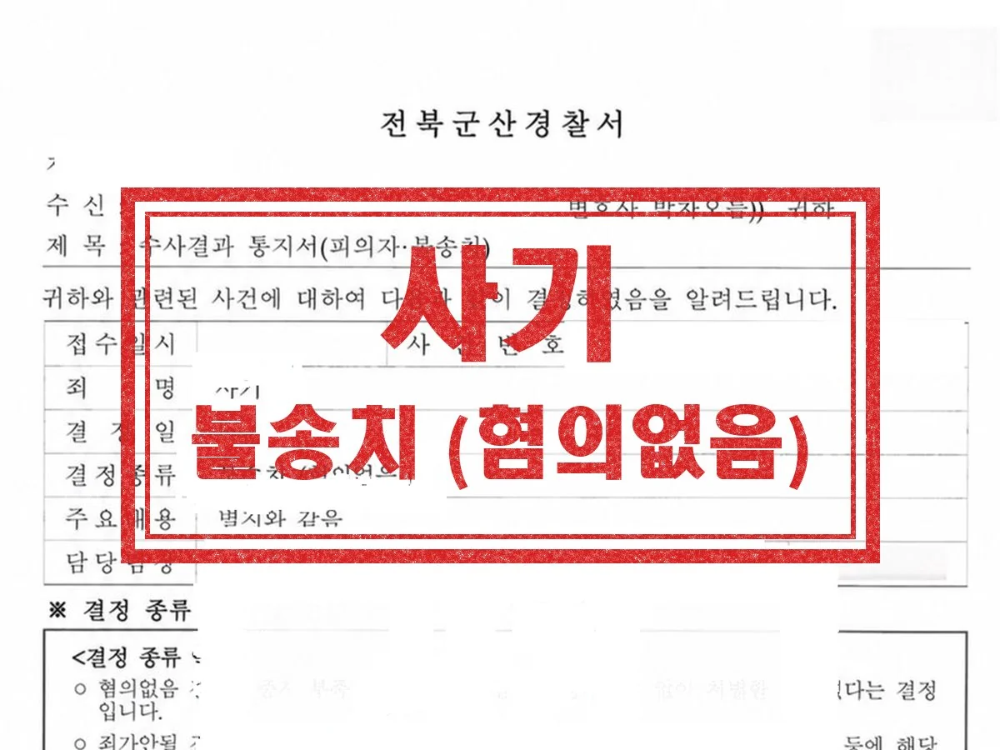

형사 · 군형사
특수강간
평소 알고 지내던 상대방, 지인과 함께 숙박업소에 머무르게 되었는데, 그 과정에서 있었던 성관계를 두고 상대방이 의뢰인을 특수강간으로 고소한 사안입니다. 성관계가 동의하에 이루어진 점, 폭행이나 협박이 전혀 없었던 점, 상대방 주장에 신빙성이 없는 점을 적극 입증하여 변소했습니다.
결과 경찰 불송치
Guide
군산 무죄 변호사 상담 안내
| 관할 | 군산경찰서 → 전주지방공소청 군산지청 → 전주지방법원 군산지원 |
|---|---|
| 관련 법조 | 형사소송법 제307조(증거재판주의), 제325조(무죄의 판결), 제266조의3(서류 등의 열람·등사), 제308조의2(위법수집증거의 배제), 제194조의2(무죄판결과 비용보상) |
| 담당 변호사 | 이민규 대표변호사 (경찰대 졸업, 군산경찰서 수사과 근무) |
| 관련 분야 | 일반형사·군형사 분야 안내 → |
무죄는 기소된 사건에서 법원이 판결로 내리는 결론입니다. 피고사건이 범죄로 되지 않거나 범죄사실의 증명이 없으면 무죄를 선고해야 하고(형사소송법 제325조), 범죄사실은 합리적인 의심이 없는 정도로 증명되어야 합니다(제307조 제2항).
수사 단계에서 무혐의를 받지 못했더라도 재판에서는 수사기록을 열람·등사해 고소인 진술의 변화를 확인하고, 증인신문으로 직접 따져 물을 수 있습니다. 군산 사건은 대개 전주지방법원 군산지원에서 재판이 열립니다.
Issues
사실이 그대로라도 법이 정한 범죄 요건에 해당하지 않으면 무죄입니다.
고소인 진술만 있고 객관적 자료와 맞지 않으면 합리적 의심이 남습니다.
공소제기 후 검사가 가진 서류와 증거를 열람·등사해 방어를 준비합니다.
고소인 진술이 고소장, 조사, 법정에서 어떻게 달라졌는지 짚습니다.
적법한 절차를 따르지 않고 수집한 증거는 증거로 쓸 수 없습니다.
재판에 든 비용의 보상을 청구할 수 있고, 구금되었다면 형사보상도 검토합니다.
Process
01
공소장과 수사기록을 열람·등사해 쟁점을 정리합니다.
02
증거 동의 여부를 정하고 다툴 증거를 가려냅니다.
03
진술 변화와 모순을 정리해 법정에서 신문합니다.
04
최종 변론으로 합리적 의심이 남는 이유를 정리합니다.
Results
평소 알고 지내던 상대방, 지인과 함께 숙박업소에 머무르게 되었는데, 그 과정에서 있었던 성관계를 두고 상대방이 의뢰인을 특수강간으로 고소한 사안입니다. 성관계가 동의하에 이루어진 점, 폭행이나 협박이 전혀 없었던 점, 상대방 주장에 신빙성이 없는 점을 적극 입증하여 변소했습니다.
결과 경찰 불송치

연인 사이에 수년간 금전거래가 있었는데, 결별한 뒤 상대방이 의뢰인을 사기로 고소한 사안입니다. 기망행위가 존재하지 않았던 점, 편취의 고의가 없었던 점을 적극 변소했습니다.
결과 경찰 불송치
실제 수행한 사건의 결과를 의뢰인이 특정되지 않도록 정리한 것입니다. 사건의 결과는 개별 사실관계와 증거에 따라 달라지며, 과거의 결과가 다른 사건에서도 같은 결과로 이어지는 것은 아닙니다. 성공사례 전체 보기 →
Columns
무혐의·무죄가 나오는 세 가지 이유, 조사에서 해가 되는 다섯 가지 말, 진술의 빈틈을 짚는 방법.
공소장의 빈틈, 위법수집증거, 증거보전, 반대신문, 항소. 기소 후에도 무죄를 다툴 수 있는 지점.
거짓말탐지기 결과, 객관적 증거, 진술의 신빙성 등 다퉈 볼 수 있는 유형과 판단 기준까지.
검사가 실시되는 사건, 결과의 한계, 먼저 요청해도 되는 경우와 아닌 경우까지.
FAQ
형사 다른 안내
분야를 정해서 연락 주실 필요 없습니다. 무슨 일이 있었는지만 말씀해 주시면 어떤 절차로 가는 사건인지 정리해 드립니다.